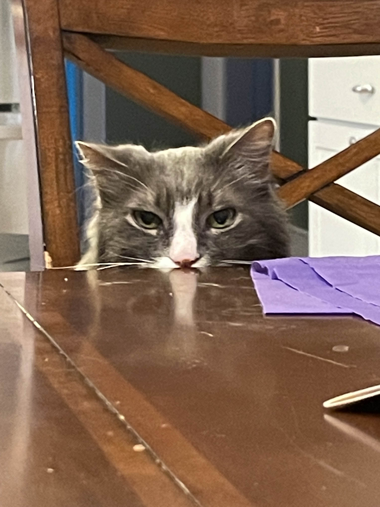
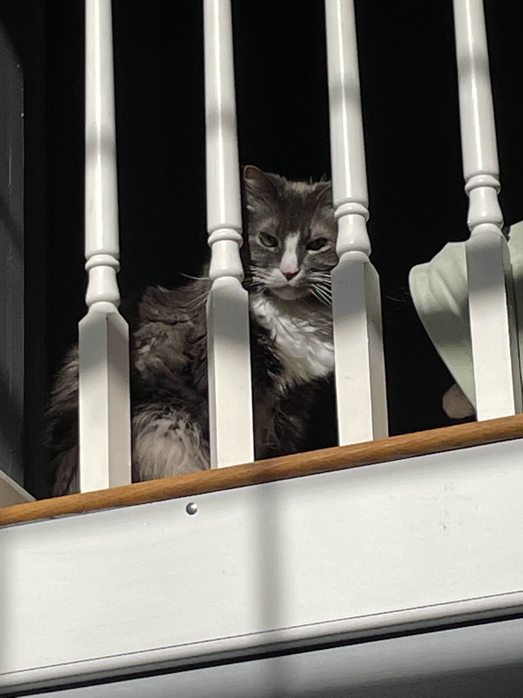
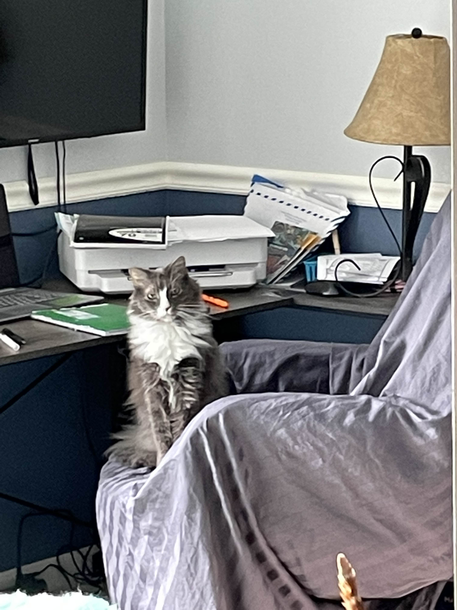

Meet Furry!



Furry has been a member of our family since he was a kitten, making him the longest member of our family out of all the pets. His old soul is 16 years old and he is by far the most loving of all the animals. He indiscriminantly loves to be pet, and will actually try to reach up and touch your face if you don't pay him enough attentionHe loves to soak in the sun, since we originally got him when we were settled in Tennessee! This is ironic given the fact that he is, by a longshot, the furriest of all the pets! He gets along best with Cupid, although with Cupid being far younger than him this sometimes presents a disconnect between them in terms of playfulness. He prefers dripping tap water over still water in the bowl, and is very vocal about it. He is certainly the most vocal out of the cats, seeking out specific people to meow at depending on his mission.
| LIKES | DISLIKES | TEMPERMENT |
|
|
|